tedana’s denoising approach
tedana works by decomposing multi-echo BOLD data via principal component analysis (PCA)
and independent component analysis (ICA).
The resulting components are then analyzed to determine whether they are
TE-dependent or -independent.
TE-dependent components are classified as BOLD,
while TE-independent components are classified as non-BOLD,
and are discarded as part of data cleaning.
In tedana, we take the time series from all the collected TEs, combine them,
and decompose the resulting data into components that can be classified as BOLD
or non-BOLD.
This is performed in a series of steps, including:

We provide more detail on each step below. The figures shown in this walkthrough are generated in the provided notebooks.
Multi-echo data
Here are the echo-specific time series for a single voxel in an example resting-state scan with 8 echoes. This voxel was selected because it is fairly correlated with the checkerboard task, but you can see that the signal changes substantially across echoes. With a 9.58ms echo time, little 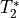 has developed, and the response to the task has a lower magnitude.

The values across volumes for this voxel scale with echo time in a predictable manner.
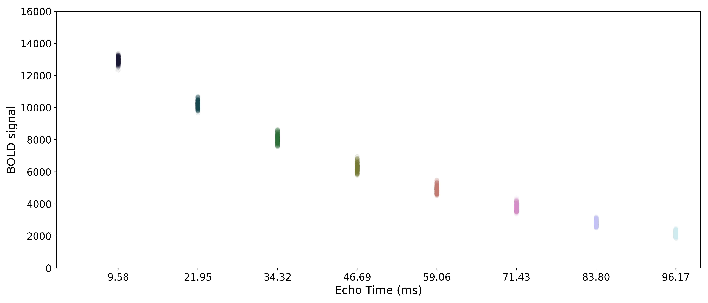Note
In this example, the non-steady state volumes at the beginning of the run are excluded.
Some pulse sequences save these initial volumes and some do not.
If they are saved, then the first few volumes in a run will have much larger relative magnitudes.
These initial volumes should be removed before running tedana.
Adaptive mask generation
tedana.utils.make_adaptive_mask()
Longer echo times are more susceptible to signal dropout, which means that certain brain regions (e.g., orbitofrontal cortex, temporal poles) may only have good signal for some echoes.
In order to avoid using bad signal from affected echoes in calculating
and  for a given voxel,
for a given voxel,
tedana generates an adaptive mask,
where the value for each voxel indicates how many of the echoes
(starting with the first echo) have “good” signal.
tedana has multiple methods for generating this mask,
and we recommend looking at the description of make_adaptive_mask() for more information.
When and are calculated below,
each voxel’s values are only calculated from the first  echoes,
where is the value for that voxel in the adaptive mask.
By default, the optimally combined and denoised time series will include voxels
where there is at least one good echo,
but ICA and the fit maps require at least three good echoes.
echoes,
where is the value for that voxel in the adaptive mask.
By default, the optimally combined and denoised time series will include voxels
where there is at least one good echo,
but ICA and the fit maps require at least three good echoes.
Note
tedana allows users to provide their own mask.
The adaptive mask will be computed on this explicit mask, and may reduce
it further based on the data.
If a mask is not provided, tedana runs nilearn.masking.compute_epi_mask()
on the first echo’s data to derive a mask prior to adaptive masking.
Some brain masking is required because the percentile-based thresholding
in the adaptive mask will be flawed if it includes all out-of-brain voxels.
In this eight-echo dataset, we can see that the adaptive mask flags later echoes as “bad” in areas we expect to suffer most from dropout, including the orbitofrontal cortex and temporal poles.

Monoexponential decay model fit
The next step is to fit a monoexponential decay model to the data in order to
estimate voxel-wise and  .
corresponds to the total signal in each voxel before decay and can reflect coil sensivity.
corresponds to the rate at which a voxel decays over time,
which is related to signal dropout and BOLD sensitivity.
Estimates of the parameters are saved as T2starmap.nii.gz and S0map.nii.gz.
.
corresponds to the total signal in each voxel before decay and can reflect coil sensivity.
corresponds to the rate at which a voxel decays over time,
which is related to signal dropout and BOLD sensitivity.
Estimates of the parameters are saved as T2starmap.nii.gz and S0map.nii.gz.
While and in fact fluctuate over time,
estimating them on a volume-by-volume basis with only a small number of echoes is not feasible
(i.e., the estimates would be extremely noisy).
As such, we estimate average and maps and use those
throughout the workflow.
However, it is important to note that promising work has been done using
volume-wise and estimates [1],
which can be estimated with --fitmode ts in tedana.workflows.t2smap_workflow().
In order to make it easier to fit the decay model to the data,
tedana transforms the data by default.
The BOLD data are transformed as  , where
, where  is the BOLD signal.
The echo times are also multiplied by -1.
is the BOLD signal.
The echo times are also multiplied by -1.
Tip
It is now possible to do a nonlinear monoexponential fit to the original,
untransformed data values by specifiying --fittype curvefit.
This method is slightly more computationally demanding but may obtain more
accurate fits.

A simple line can then be fit to the transformed data with linear regression. For the sake of this introduction, we can assume that the example voxel has good signal in all eight echoes (i.e., the adaptive mask has a value of 8 at this voxel), so the line is fit to all available data.
Note
tedana actually performs and uses two sets of / model fits.
In one case, tedana estimates and for voxels with good signal in at
least two echoes.
In the other case, tedana estimates and for voxels
with good data in only one echo as well, but uses the first two echoes for those voxels.
The resulting “full” and maps are used throughout the rest of the pipeline.
The values of interest for the decay model, and ,
are then simple transformations of the line’s intercept (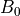) and
slope (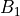), respectively:
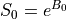
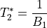
The resulting values can be used to show the fitted monoexponential decay model on the original data.

We can also see where lands on this curve.

Optimal combination
Using the estimates,
tedana combines signal across echoes using a weighted average.
The echoes are weighted according to the formula:

The weights are then normalized across echoes. For the example voxel, the resulting weights are:
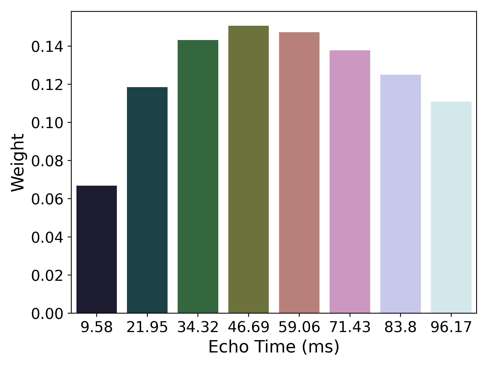{kind=link}
These normalized weights are then used to compute a weighted average that takes advantage of the higher signal in earlier echoes and the higher sensitivity at later echoes. The distribution of values for the optimally combined data lands somewhere between the distributions for other echoes.

The time series for the optimally combined data also looks like a combination of the other echoes (which it is). This optimally combined data is written out as desc-optcom_bold.nii.gz
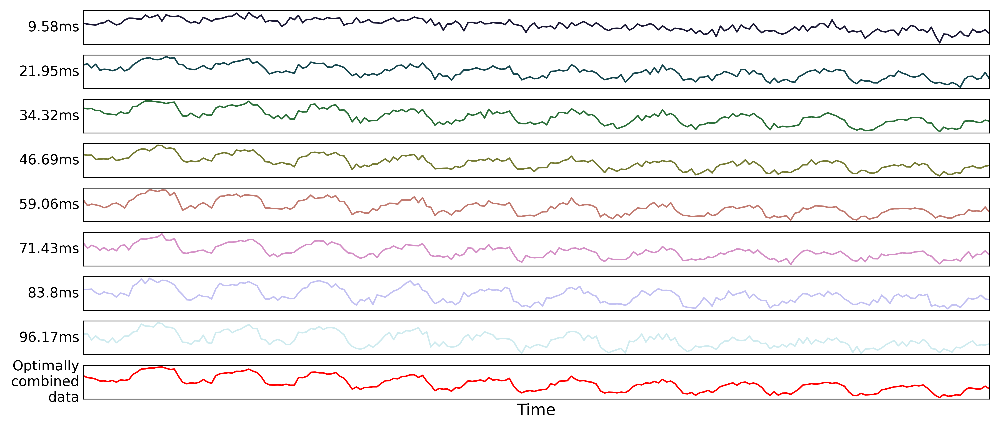Note
An alternative method for optimal combination that
does not use is the parallel-acquired inhomogeneity
desensitized (PAID) ME-fMRI combination method [2].
This method specifically assumes that noise in the acquired echoes is
“isotopic and homogeneous throughout the image,”
meaning it should be used on smoothed data.
As we do not recommend performing tedana denoising on smoothed data,
we discourage using PAID within the tedana workflow.
We do, however, make it accessible as an alternative combination method
in tedana.workflows.t2smap_workflow().
Denoising
The next step is an attempt to remove noise from the data. This process can be broadly separated into three steps: decomposition, metric calculation and component selection. Decomposition reduces the dimensionality of the optimally combined data using principal component analysis (PCA) and then an independent component analysis (ICA). Metrics that evaluate TE-dependence or -independence are derived from these components. Component selection uses these metrics in order to identify components that should be kept in the data or discarded. Unwanted components are then removed from the optimally combined data to produce the denoised data output.
TEDPCA
The next step is to dimensionally reduce the data with TE-dependent principal component analysis (PCA). The goal of this step is to make it easier for the later ICA decomposition to converge. Dimensionality reduction is a common step prior to ICA. TEDPCA applies PCA to the optimally combined data in order to decompose it into component maps and time series (saved as desc-PCA_mixing.tsv). Here we can see time series for some example components (we don’t really care about the maps):

These components are subjected to component selection, the specifics of which
vary according to algorithm.
Specifically, tedana offers three different approaches that perform this step.
The recommended approach
(the default aic option, along with the kic and mdl options, for --tedpca)
is based on a moving average (stationary Gaussian) process
proposed by Li et al.[3] and used primarily in the Group ICA of fMRI Toolbox (GIFT).
A moving average process is the output of a linear system
(which, in this case, is a smoothing filter)
that has an independent and identically distributed Gaussian process as the input.
Simply put, this process more optimally selects the number of components for
fMRI data following a subsampling scheme described in Li et al.[3].
The number of selected principal components depends on the selection criteria.
For this PCA method in particular, --tedpca provides three different options
to select the PCA components based on three widely-used model selection criteria:
mdl: the Minimum Description Length (MDL), which is the most aggressive option; i.e. returns the least number of components.kic: the Kullback-Leibler Information Criterion (KIC), which stands in the middle in terms of aggressiveness. You can see how KIC is related to AIC here.aic: the Akaike Information Criterion (AIC), which is the least aggressive option; i.e., returns the largest number of components. We have chosen AIC as the default PCA criterion because it tends to result in fewer components than the Kundu methods, which increases the likelihood that the ICA step will successfully converge, but also, in our experience, retains enough components for meaningful interpretation later on.
Note
Please, bear in mind that this is a data-driven dimensionality reduction approach.
The default option aic might not yield perfect results on your data.
Consider kic and mdl options if running tedana with aic returns more components than expected.
There is no definitively right number of components, but, for typical fMRI datasets, if the PCA
explains more than 98% of the variance or if the number of components is more than half the number
of time points, then it may be worth considering more aggressive thresholds.
The simplest approach uses a user-supplied threshold applied to the cumulative variance explained
by the PCA.
In this approach, the user provides a value to --tedpca between 0 and 1.
That value corresponds to the percent of variance that must be explained by the components.
For example, if a value of 0.9 is provided, then PCA components
(ordered by decreasing variance explained)
cumulatively explaining up to 90% of the variance will be retained.
Components explaining more than that threshold
(except for the component that crosses the threshold)
will be excluded.
In addition to the moving average process-based options and the variance explained threshold
described above,
we also support a decision tree-based selection method
(similar to the one in the TEDICA section below).
This method involves applying a decision tree to identify and discard PCA components which,
in addition to not explaining much variance,
are also not significantly TE-dependent (i.e., have low Kappa) or TE-independent (i.e., have low Rho).
These approaches can be accessed using either the kundu or kundu_stabilize
options for the --tedpca flag.
Tip
For more information on how TE-dependence and TE-independence models are
estimated in tedana, see TE (In)Dependence Models.
For a more thorough explanation of this approach, consider the supplemental information
in Kundu et al.[4].
After component selection is performed, the retained components and their associated betas are used to reconstruct the optimally combined data, resulting in a dimensionally reduced version of the dataset which is then used in the TEDICA step.

TEDICA
Next, tedana applies TE-dependent independent component analysis (ICA) in
order to identify and remove TE-independent (i.e., non-BOLD noise) components.
The dimensionally reduced optimally combined data are first subjected to ICA in
order to fit a mixing matrix to the whitened data.
tedana can use a single interation of FastICA or multiple interations of robustICA,
with an explanation of those approaches in our FAQ.
This generates a number of independent timeseries (saved as desc-ICA_mixing.tsv),
as well as parameter estimate maps which show the spatial loading of these components on the
brain (desc-ICA_components.nii.gz).

Linear regression is used to fit the component time series to each voxel in each of the original, echo-specific data. This results in echo- and voxel-specific betas for each of the components. The beta values from the linear regression can be used to determine how the fluctuations (in each component timeseries) change across the echo times.
TE-dependence ( or 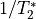) and TE-independence () models can then
be fit to these betas.
These models allow calculation of F-statistics for the and models
(referred to as
or 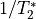) and TE-independence () models can then
be fit to these betas.
These models allow calculation of F-statistics for the and models
(referred to as  and
and  , respectively).
, respectively).
Tip
For more information on how TE-dependence and TE-independence models are estimated, see TE (In)Dependence Models.
The grey lines below shows how beta values (a.k.a. parameter estimates)
change with echo time, for one voxel and one component.
The blue and red lines show the predicted values for the and
 models, respectively, for the same voxel and component.
models, respectively, for the same voxel and component.
 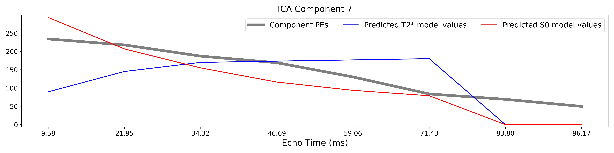
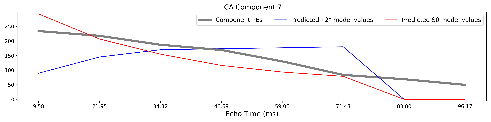

A decision tree is applied to , , and other metrics in order to
classify ICA components as TE-dependent (BOLD signal),
TE-independent (non-BOLD noise), or neither (to be ignored).
These classifications are saved in desc-tedana_metrics.tsv.
The actual decision tree is dependent on the component selection algorithm employed.
tedana includes three options tedana_orig, meica and minimal
(which uses hardcoded thresholds applied to each of the metrics).
These decision trees are detailed in Included Decision Trees.
Components that are classified as noise are projected out of the optimally combined data, yielding a denoised timeseries, which is saved as desc-denoised_bold.nii.gz.

Manual classification with RICA
RICA is a tool for manual ICA classification.
Once the .tsv file containing the result of manual component classification is obtained,
it is necessary to re-run the tedana workflow
(see Running the ica_reclassify workflow)
passing the manual_classification.tsv file with the --ctab option.
To save the output correctly,
make sure that the output directory does not coincide with the input directory.
See this example presented at MRITogether 2022 for a hands-on tutorial.
Removal of spatially diffuse noise (optional)
tedana.gscontrol.gscontrol_raw(), tedana.gscontrol.minimum_image_regression()
Due to the constraints of spatial ICA,
TEDICA is able to identify and remove spatially localized noise components,
but it cannot identify components that are spread out throughout the whole brain.
See Power et al.[5] for more information about this issue.
One of several post-processing strategies may be applied to the denoised data
in order to remove spatially diffuse (ostensibly respiration-related) noise.
Methods which have been employed in the past include
global signal regression (GSR), minimum image regression (MIR), anatomical CompCor,
Go Decomposition (GODEC), and robust PCA.
Currently, tedana implements GSR and MIR.